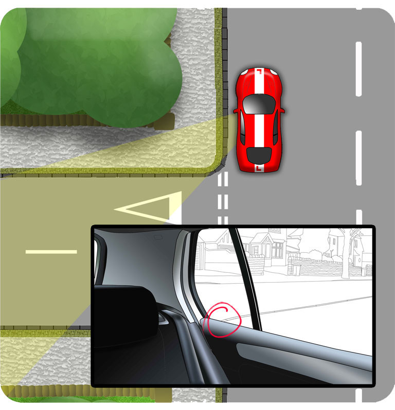

Sharper Corner
If you're negotiating a sharper corner, reverse further back, until the kerb is almost out of view in the corner of the mirror. Be prepared to apply more steering, as much as full lock if necessary.

Or you could recognise the point to begin steering by looking over your left shoulder. If necessary, experiment with this reference to find something reliable.
